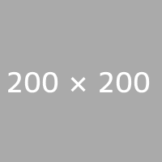
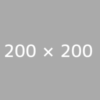

なめたけ
なめたけ(nametake)は、リッチなWebサイトを手早く、きれいに制作するためのシンプルなフレームワークです。jQueryのプラグインとして動作します。名前の由来は特にありません。

なめたけ(nametake)は、リッチなWebサイトを手早く、きれいに制作するためのシンプルなフレームワークです。jQueryのプラグインとして動作します。名前の由来は特にありません。

とりわけ、画面遷移を抽象化。あくまでサイト全体の枠組みを整えるので、
githubにてソースコードを公開しています。
nametakeの構成はいたってシンプルです。
Webサイトは多くの場合複数の画面から構成されており、ユーザーからの入力において画面が遷移します。
nametakeは1つ1つの画面をSceneオブジェクトとして管理しています。それぞれのSceneは固有のIDを持っており、ManagerオブジェクトのmoveTo
nametakeでは、サイト、それぞれのDOM要素に対応するSceneオブジェクトを、data-page-id、またdata-page-url属性を指定すると、URLを自動的にロードします。
nametakeを起動すると、DOMツリーからクラス名としてpageという名前をつけた要素のみを抽出し、それらの階層関係を反映する形でSceneの構造 であるとみなされます。この際、DOMの階層構造がそのまま反映されるため、したがって完成する階層構造をもったScene。たとえば
シーンの移動にともなう実際の演出はどこに書けばよいのでしょう？ Sceneオブジェクトには、start, end, toといったメソッドが用意されており、これらにコールバック関数を渡すことで、「どこから」「どこへ」移動したときに「どんな」演出を加えたらよいのか、といった情報を登録することができます。
manager.of('page1', function(scene) {
scene
.start(function(next) {
$(scene.element).fadeOut();
})
.end(function(next) {
})
.to('page2', function(next) {
});
});
演出の登録
上記の例からもわかるように、nametakeは「どんな演出をするか=DOM要素をどのように動かすか」については一切関与しません。nametakeが管理するのは、現在表示されているシーンの情報や、画面遷移の開始と終了のタイミングだけです。したがって、実際に行なうDOM操作の内容はユーザー側が自由に指定することができます。Sceneオブジェクトのelementプロパティから対応するDOM要素を参照できるので、多くの場合これを操作することになるでしょう。
シーンの移動は、前述したツリーのグラフの辺に沿って順次発生します。たとえば、シーン/parent1/child2からシーン/parent2/child1への移動は
という3つのステップを経ることになります。このとき、対応するコールバック関数として
が順次実行されます。
nametakeにはプリローダが添付されています。data-page-urlで指定した外部html、imgタグの中身や、スタイルシート中のbackground-imageを先読みし、全ての画像やページのロードが終わると、completeイベントに登録されたコールバック関数が実行されます。
ローディング中は一定間隔でprogressイベントが発行されるので、コールバック関数内で毎回の進捗状況を更新できます。下記の例ではPreloader#getProportion()メソッドを使ってローディングの割合を描画しています。
manager.on('preinitialize', function(preloader) {
preloader.on('progress', function() {
$('#preloader').text(Math.ceil(preloader.getProportion() + '%'));
});
preloader.on('complete', function() {
manager.initialize(); //サイト本体の起動
});
});